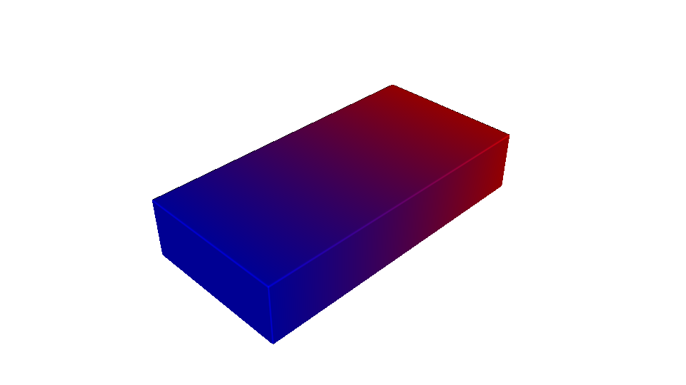
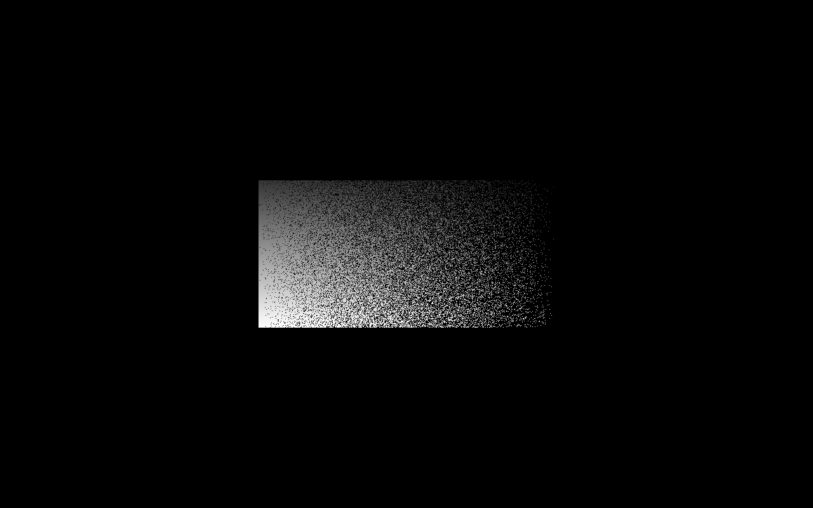
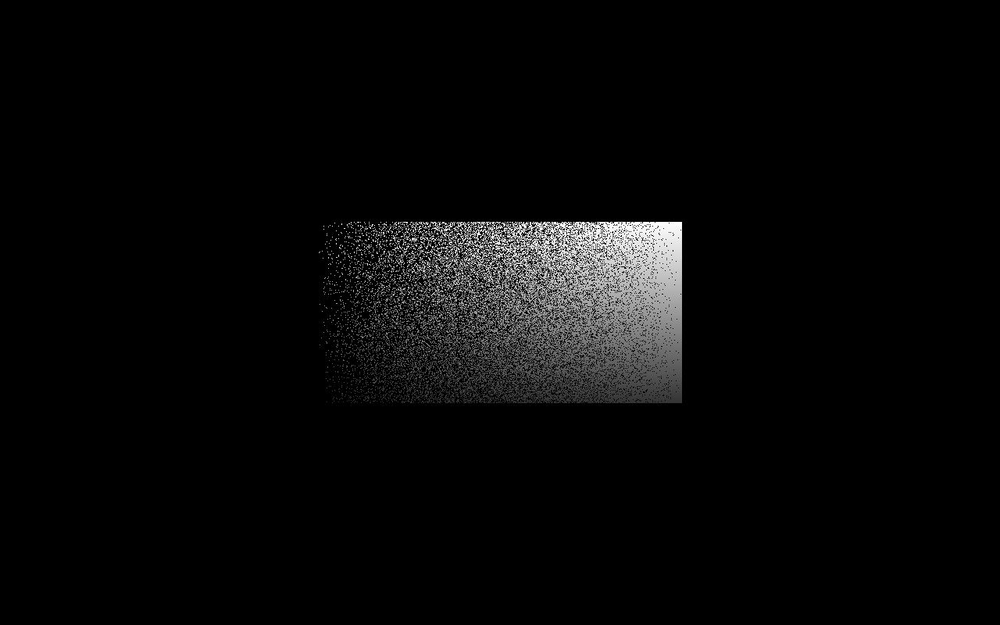
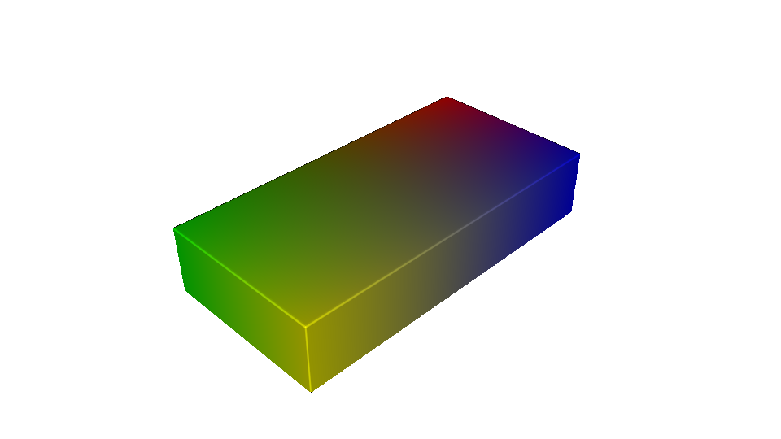

Multi-material VAT#
The MultiMaterialVatCompiler turns an OpenVCAD design with
VOLUME_FRACTIONS into synchronized grayscale PNG stacks for a printer
that can expose one layer in multiple resin vats. At every pixel, the compiler
uses the local fractions as stochastic weights, selects at most one material,
and activates only that material’s vat image.
This is different from encoding a mixture as grayscale. Volume fractions choose the vat. An optional scalar intensity channel controls the grayscale exposure after a vat has been selected.
The current folder and filename dialect follows the format supplied for MAAS, while the compiler’s design is useful for other synchronized multi-vat systems that accept the same image contract.
Output contract#
Setting |
Value |
|---|---|
Image size |
1280 × 800 pixels |
Physical XY area |
55.01 × 34.38 mm |
Maximum Z height |
150 mm |
Layer thickness |
0.05 mm by default; minimum 0.01 mm |
Image encoding |
8-bit grayscale PNG |
Pixel meaning |
0 is no exposure; 255 is full exposure |
Placement |
Centered in X/Y; the model’s bottom becomes layer 0000 |
Image mapping |
No rotation or axis flip |
Layer order |
Bottom to top |
Dual-vat output contains vat_a and vat_b. Quad-vat output also contains
vat_c and vat_d. Every directory contains the same numbered layer range,
including entirely black images when a vat is unused for a layer.
output/
├── vat_a/
│ ├── vata_layer_0000.png
│ └── vata_layer_0001.png
└── vat_b/
├── vatb_layer_0000.png
└── vatb_layer_0001.png
Material assignment and intensity#
Pass material names in vat order. In a dual system, ['red', 'blue'] maps red
to Vat A and blue to Vat B. A quad system accepts one to four configured
materials and emits black images for any remaining vats.
At each inside sample, the compiler:
reads
VOLUME_FRACTIONS;makes a seeded weighted choice among the configured materials and explicit void, when present;
reads the selected material’s optional
<material_name>_intensityscalar;writes that intensity to the selected vat and black to every other vat.
Intensity defaults to 1.0 and is clamped to [0, 1] before conversion with
round(intensity * 255). For example, red_intensity controls only pixels
assigned to the material named red. It does not change the probability that
red is selected.
The random_seed makes the stochastic pattern reproducible. Repeating the
same design and compiler settings with the same seed produces the same pixel
assignments. Change the seed when you intentionally want another statistically
equivalent distribution.
Examples#
1. Basic two-material gradient#
The first example builds a 20 × 10 × 4 mm red-blue prism. Its fractions grade from red on the left to blue on the right. Neither material defines an intensity channel, so every selected pixel uses full exposure.
"""
Multi-material VAT — basic two-material gradient
=================================================
Builds a rectangular prism with a red-to-blue material gradient, resolves its
volume fractions into synchronized Vat A and Vat B exposure masks, and opens
the interactive material preview. Both materials use full exposure because no
intensity attributes are assigned.
"""
import os
import shutil
import pyvcad as pv
import pyvcad_compilers as pvc
import pyvcad_rendering as viz
materials = pv.default_materials
red_id = materials.id("red")
blue_id = materials.id("blue")
root = pv.RectPrism.FromMinAndMax(
pv.Vec3(-10.0, -5.0, 0.0),
pv.Vec3(10.0, 5.0, 4.0),
)
# The fractions choose which vat owns each addressable pixel. They do not set
# exposure brightness directly.
root.set_attribute(
pv.DefaultAttributes.VOLUME_FRACTIONS,
pv.VolumeFractionsAttribute(
[
("0.5 - x / 20", red_id),
("0.5 + x / 20", blue_id),
]
),
)
output_dir = os.path.join(os.path.dirname(__file__), "basic_output")
output_zip = output_dir + ".zip"
if os.path.isdir(output_dir):
shutil.rmtree(output_dir)
if os.path.isfile(output_zip):
os.remove(output_zip)
compiler = pvc.MultiMaterialVatCompiler(
root,
output_dir,
materials,
["red", "blue"],
layer_thickness=0.1,
system=pvc.MultiMaterialVatSystem.DUAL,
output_mode=pvc.MultiMaterialVatOutputMode.ZIP
)
def on_progress(progress):
print("compile progress: {:.1f}%".format(100.0 * progress))
compiler.set_progress_callback(on_progress)
compiler.compile()
print("resolution (x, y, layers):", compiler.resolution())
print("directory:", output_dir)
viz.Render(root, materials)
Install OpenVCAD, save the companion scripts, and run any of them with Python:
python -m pip install openvcad
python 01_basic_png_stack.py
python 02_two_material_intensity.py
python 03_four_material_gradient.py
The basic example retains a directory containing synchronized Vat A and Vat B stacks and opens an interactive volume-fraction preview.
Continuous volume-fraction design

2. Independent intensity for two materials#
The next example uses a 20 × 10 × 4 mm prism and assigns both
red_intensity and blue_intensity. Red brightens toward positive Y while
blue dims, demonstrating that each vat can carry its own spatial exposure
field without changing the material probabilities. It retains both the
directory stacks and a ZIP archive.
"""
Multi-material VAT — independent two-material intensity
========================================================
Builds a red-to-blue rectangular prism and independently controls the exposure
intensity of both materials. Red brightens toward positive Y while blue dims
in the same direction. The volume fractions still determine which vat owns
each pixel; the intensity attributes only control selected-pixel brightness.
"""
import os
import shutil
import pyvcad as pv
import pyvcad_compilers as pvc
import pyvcad_rendering as viz
materials = pv.default_materials
red_id = materials.id("red")
blue_id = materials.id("blue")
root = pv.RectPrism.FromMinAndMax(
pv.Vec3(-10.0, -5.0, 0.0),
pv.Vec3(10.0, 5.0, 4.0),
)
root.set_attribute(
pv.DefaultAttributes.VOLUME_FRACTIONS,
pv.VolumeFractionsAttribute(
[
("0.5 - x / 20", red_id),
("0.5 + x / 20", blue_id),
]
),
)
# These named channels are sampled only after their material wins the
# stochastic volume-fraction selection at a pixel.
root.set_attribute("red_intensity", pv.FloatAttribute("0.2 + 0.8 * (y + 5) / 10"))
root.set_attribute("blue_intensity", pv.FloatAttribute("1.0 - 0.8 * (y + 5) / 10"))
output_dir = os.path.join(os.path.dirname(__file__), "intensity_output")
output_zip = output_dir + ".zip"
if os.path.isdir(output_dir):
shutil.rmtree(output_dir)
if os.path.isfile(output_zip):
os.remove(output_zip)
compiler = pvc.MultiMaterialVatCompiler(
root,
output_dir,
materials,
["red", "blue"],
layer_thickness=0.1,
system=pvc.MultiMaterialVatSystem.DUAL,
output_mode=pvc.MultiMaterialVatOutputMode.DIRECTORY_AND_ZIP,
random_seed=84,
)
def on_progress(progress):
print("compile progress: {:.1f}%".format(100.0 * progress))
compiler.set_progress_callback(on_progress)
compiler.compile()
print("resolution (x, y, layers):", compiler.resolution())
print("directory:", output_dir)
print("archive:", compiler.archive_path())
viz.Render(root, materials)
These are the synchronized layer-0000 exposure masks. Their nonblack pixels are mutually exclusive, while their opposing grayscale gradients come from the two independent intensity attributes.
Vat A — red assignment, brightening toward positive Y

Vat B — blue assignment, dimming toward positive Y

3. Four-material gradient#
The quad-vat example assigns red, green, blue, and yellow to the four XY corners of a 20 × 10 × 4 mm prism. Bilinear weights sum to one everywhere, producing smooth two- and four-way transitions. The compiler writes a ZIP containing synchronized Vat A through Vat D stacks.
"""
Multi-material VAT — four-material gradient
============================================
Builds a rectangular prism with red, green, blue, and yellow concentrated at
different XY corners. Bilinear volume-fraction weights create smooth mixtures
between all four corners, which a quad-vat compiler resolves into synchronized
Vat A through Vat D exposure masks.
"""
import os
import shutil
import pyvcad as pv
import pyvcad_compilers as pvc
import pyvcad_rendering as viz
materials = pv.default_materials
red_id = materials.id("red")
green_id = materials.id("green")
blue_id = materials.id("blue")
yellow_id = materials.id("yellow")
root = pv.RectPrism.FromMinAndMax(
pv.Vec3(-10.0, -5.0, 0.0),
pv.Vec3(10.0, 5.0, 4.0),
)
# Left/right and bottom/top weights each sum to one. Their products therefore
# form four nonnegative corner weights that also sum to one everywhere.
root.set_attribute(
pv.DefaultAttributes.VOLUME_FRACTIONS,
pv.VolumeFractionsAttribute(
[
("((10 - x) / 20) * ((5 - y) / 10)", red_id),
("((10 + x) / 20) * ((5 - y) / 10)", green_id),
("((10 - x) / 20) * ((5 + y) / 10)", blue_id),
("((10 + x) / 20) * ((5 + y) / 10)", yellow_id),
]
),
)
output_dir = os.path.join(os.path.dirname(__file__), "four_material_output")
output_zip = output_dir + ".zip"
if os.path.isdir(output_dir):
shutil.rmtree(output_dir)
if os.path.isfile(output_zip):
os.remove(output_zip)
compiler = pvc.MultiMaterialVatCompiler(
root,
output_dir,
materials,
["red", "green", "blue", "yellow"],
layer_thickness=0.1,
system=pvc.MultiMaterialVatSystem.QUAD,
output_mode=pvc.MultiMaterialVatOutputMode.ZIP,
random_seed=126,
)
def on_progress(progress):
print("compile progress: {:.1f}%".format(100.0 * progress))
compiler.set_progress_callback(on_progress)
compiler.compile()
print("resolution (x, y, layers):", compiler.resolution())
print("archive:", compiler.archive_path())
viz.Render(root, materials)
Continuous four-material design

Directory, ZIP, or both#
Choose an output mode with MultiMaterialVatOutputMode:
DIRECTORYretains the per-vat directory tree.ZIPcreates<output_path>.zipand removes the generated vat directories after archiving.DIRECTORY_AND_ZIPretains both forms.
The ZIP contains the same vat_a/ through vat_d/ tree as directory output.
Passing an output path ending in .zip is also accepted; the suffix is treated
as the archive suffix rather than part of the directory name.
Placement and validation#
The compiler samples each pixel at its physical center and each Z layer at its layer center. It centers the design’s bounding box in X and Y, places the bounding-box minimum at build Z zero, and leaves the OpenVCAD tree itself unchanged.
Compilation stops with an error when:
the design exceeds 55.01 × 34.38 × 150 mm;
the layer thickness is below 0.01 mm;
a dual system receives more than two configured materials;
a quad system receives more than four configured materials;
an inside sample lacks
VOLUME_FRACTIONS;a positive fraction references a material that is not assigned to a vat; or
a fraction or selected intensity is non-finite.
Negative fractions are rejected. Explicit material ID 0 is treated as void
and produces black in every vat.
API summary#
pvc.MultiMaterialVatCompiler(
root,
output_path,
material_defs,
vat_material_names,
layer_thickness=0.05,
system=pvc.MultiMaterialVatSystem.DUAL,
output_mode=pvc.MultiMaterialVatOutputMode.DIRECTORY,
random_seed=0,
)
Use resolution() after compilation for (1280, 800, layer_count),
printer_volume() for the build envelope, and archive_path() for the
derived ZIP filename.
The compiler performs image generation only. Printer-specific exposure-time calibration, feature erosion or expansion, cleaning parameters, and support generation remain downstream process decisions.